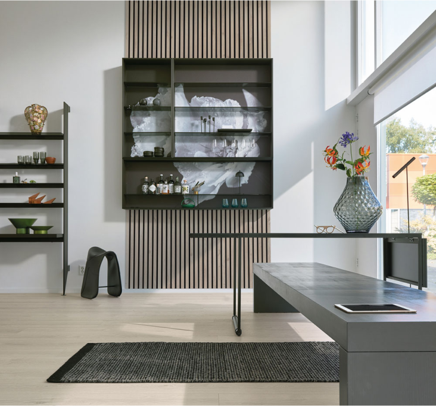

Spécialisé en revêtements de sol, Meister n’est pas en reste dans d’autres domaines, notamment lespanneaux acoustiques. Avec Acoustic Sense, complexe d’isolation phonique au design de type scandinave, le fabricant allemand propose une nouveauté à la fois esthétique et technique. Utilisable en mur comme au plafond, ce panneau est composé de fines lamelles de MDF à bords chanfreinés, collées sur un support de feutre noir insonorisant et fabriqué à partir de 70% de matériaux recyclés. Facile à poser, il présente une classe d’absorption C (environ 65% des bruits sont absorbés); sa surface est résistante à l’humidité, facilitant son entretien et autorisant sa mise en œuvre dans les pièces d’eau. Six décors sont disponibles, avec accessoires (plinthes et cimaises) coordonnés: Chêne clair, Chêne vieux bois, Chêne brun Terra, Chêne multicolore, Noyer, Gravel Stone. Dimensions: 2600 x 320 mm pour 20 mm d’épaisseur.
